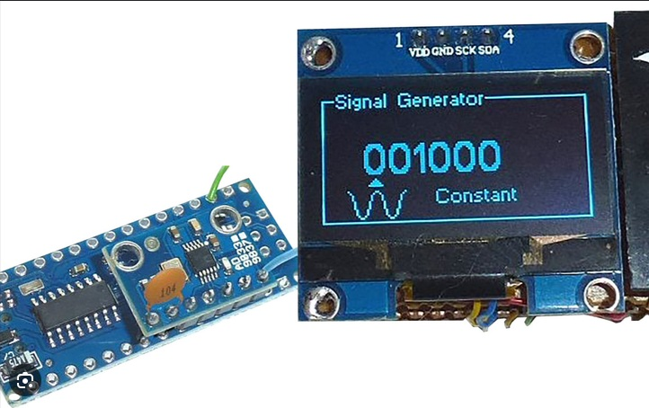

Generator funkcyjny
Generator sygnałów w oparciu o AD9833
Projekt generatora sygnałów wykorzystującego układ DDS AD9833. Założeniem projektu jest budowa kompaktowego generatora przebiegów sinusoidalnych, prostokątnych i trójkątnych, sterowanego z poziomu mikrokontrolera.
Projekt obejmuje część cyfrową, interfejs użytkownika, sterowanie układem AD9833, tor wyjściowy, filtrację sygnału oraz zagadnienia związane ze skalowaniem amplitudy i offsetem.
Szczegóły projektu